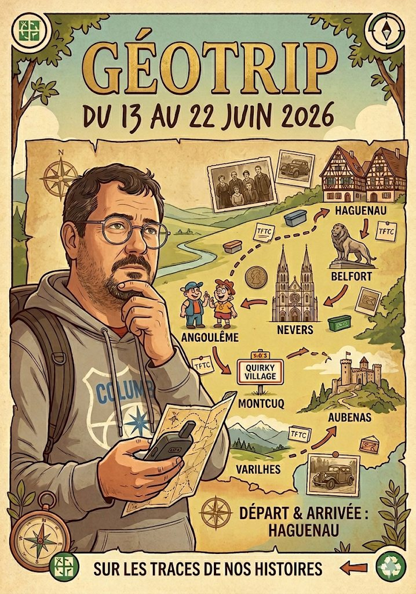

Après 2000
GéoTrip 2026
Le roadbook — avant le départ
Viviel d'Adyope ·
5 min de lecture

Chapitre I — Celui qui attend le départ
Appelez-moi David.
Non pas que ce soit mon nom véritable — quoique — mais parce qu'en cet instant suspendu entre deux vies, celui d'homme installé et celui d'homme en partance, il me semble approprié d'adopter un nom simple, solide, un nom qui tient debout comme un vieux port face aux marées.
Depuis quelques jours déjà, je traîne mentalement sur les quais invisibles d'un voyage qui n'a pas encore commencé. Rien n'est encore arrivé, et pourtant tout a déjà commencé. Les cartes sont ouvertes sur l'écran, les routes serpentent sous mes doigts comme des rivières anciennes, et dans un coin de ma tête, les visages du passé remontent à la surface, un à un, comme des épaves qu'on croyait oubliées.
Il reste encore des semaines avant le grand départ, mais mon esprit, lui, a déjà quitté le port.
Chaque matin, je pars travailler comme d'habitude, mais ce n'est plus vraiment moi qui franchis la porte du bureau. Une partie de moi est ailleurs — sur une nationale bordée d'arbres, dans une clairière humide où dort une boîte de géocaching oubliée, ou devant une maison où un ami d'autrefois ouvrira la porte après trente ans d'absence.
Car ce voyage n'est pas un simple déplacement.
C'est une expédition dans le temps.
Une tournée des fantômes bien vivants — ceux qui furent, un jour, les meilleurs compagnons d'une jeunesse aujourd'hui rangée dans les tiroirs de la mémoire.
Je les ai connus à des époques différentes, dans des mondes séparés, comme autant d'îles éparpillées sur une carte ancienne. Aucun ne connaît l'autre. Aucun ne sait vraiment ce que les autres représentent. Mais tous, à leur manière, détiennent un fragment de ce que j'ai été.
Et c'est pour cela que je pars.
Non pour fuir, ni pour conquérir — mais pour rassembler.
Rassembler les morceaux d'une vie dispersée aux quatre vents, comme un marin qui revient sur les lieux où il a jadis jeté l'ancre.
Pour accomplir ce voyage, je ne dispose ni d'un navire flambant neuf, ni d'un équipage aguerri. Mon bâtiment est une vieille monture fidèle — une voiture fatiguée par les années et les kilomètres, mais encore vaillante. Plus de quatre cent mille kilomètres dans les roues, des cicatrices invisibles sous la peinture, et une mécanique qui a vu passer plus de saisons qu'un vieux phare côtier.
Elle n'est pas jeune.
Moi non plus.
Et c'est précisément pour cela que nous nous comprenons.
Nous savons tous les deux que ce voyage pourrait bien être le dernier grand. Pas le dernier tout court — mais le dernier de ceux qui comptent vraiment.
Pour l'instant, je suis encore au port.
Je regarde les cartes.
Je prépare les sacs.
Je coche des listes.
Et dans un coin de ma mémoire, une chanson attend son heure — celle qui retentira le matin du départ, lorsque je tournerai la clé de contact et que les premières mesures annonceront officiellement ce que je sais déjà depuis longtemps :
Le voyage a commencé bien avant la route.
Chapitre -10 — Ulysse en Corolla
Le voyage avait changé sans demander son avis à personne.
Au début, il était simple.
Une voiture, quelques routes, des boîtes cachées sous des pierres moussues, quelques vieillards retrouvés au bord des années.
Il suffisait de tourner la clé du contact.
Mais voilà qu'à mesure que l'on approchait du départ, les passagers montaient à bord avant même que la voiture ne quitte le parking.
D'abord les morts.
Non pas les vrais morts.
Les anciennes versions de lui-même.
Le garçon timide qui s'était inscrit au BAFA par défi.
Le biochimiste qui avait trahi les éprouvettes pour des ordinateurs.
Le candidat aux législatives qui avait obtenu un score inférieur à l'épaisseur du trait sur les affiches électorales.
Ils étaient tous là, serrés sur la banquette arrière.
Puis étaient montés les vivants.
Thomas de Nevers.
Yann d'Angoulême.
Jeff de Montcuq.
Valérie d'Aubenas.
Des noms qui n'étaient plus des personnes mais des continents dérivant lentement depuis trente ans sur l'océan du temps.
Et puis Céline.
Toujours Céline.
Céline qui, dans les premiers brouillons du voyage, apparaissait comme une héroïne de roman libertin.
Et qui, à présent, se transformait peu à peu en café tiède sur une terrasse de village.
Curieusement, la réalité la rendait plus vraie.
Et donc plus dangereuse.
Car les fantasmes ne peuvent pas décevoir.
Les êtres humains, eux, oui.
Puis était arrivé le plus inattendu.
Le fils.
Apparu au détour d'une conversation enfumée.
Comme ces personnages secondaires que l'auteur invente pour une seule scène et qui finissent par voler le roman tout entier.
Il avait dit oui.
Ou peut-être non.
Ou peut-être les deux à la fois.
À vingt-et-un ans, il existait dans cet état quantique particulier où l'on accepte un voyage tout en conservant le droit sacré de changer d'avis.
Et soudain le périple avait changé de nature.
Le fugitif solitaire se retrouvait candidat au poste de guide.
Il ne savait pas encore si cela lui plaisait.
Et pendant ce temps-là, à la maison, une autre histoire se déroulait.
Invisible.
Sa femme comptait les jours elle aussi.
Mais pas pour les mêmes raisons.
Lui regardait le calendrier comme un prisonnier observe l'approche de sa libération.
Elle le regardait comme on regarde s'éloigner un bateau.
Et plus le départ approchait, plus le navire grossissait dans l'horizon de ses inquiétudes.
Les mots rassurants coulaient sur elle comme la pluie sur un imperméable.
Parce que les angoisses ne se nourrissent pas d'arguments.
Elles se nourrissent d'absence.
Le voyage n'avait toujours pas commencé.
Pourtant il était déjà partout.
Dans les silences.
Dans les discussions.
Dans les messages.
Dans les cartes ouvertes sur le téléphone.
Dans les géocaches enregistrées hors ligne.
Dans les vieux souvenirs qui remontaient du fond des décennies comme des épaves retrouvées à marée basse.
Et l'homme au centre de tout cela restait assis dans son salon.
Un genou douloureux.
Un dos récalcitrant.
Cent cinq kilos de chair rafistolée.
Une vieille Corolla de quatre cent mille kilomètres.
Et cette pensée étrange qui lui traversait parfois l'esprit :
"Je ne suis peut-être pas en état de faire ce voyage."
Puis une autre lui répondait immédiatement :
"Justement."